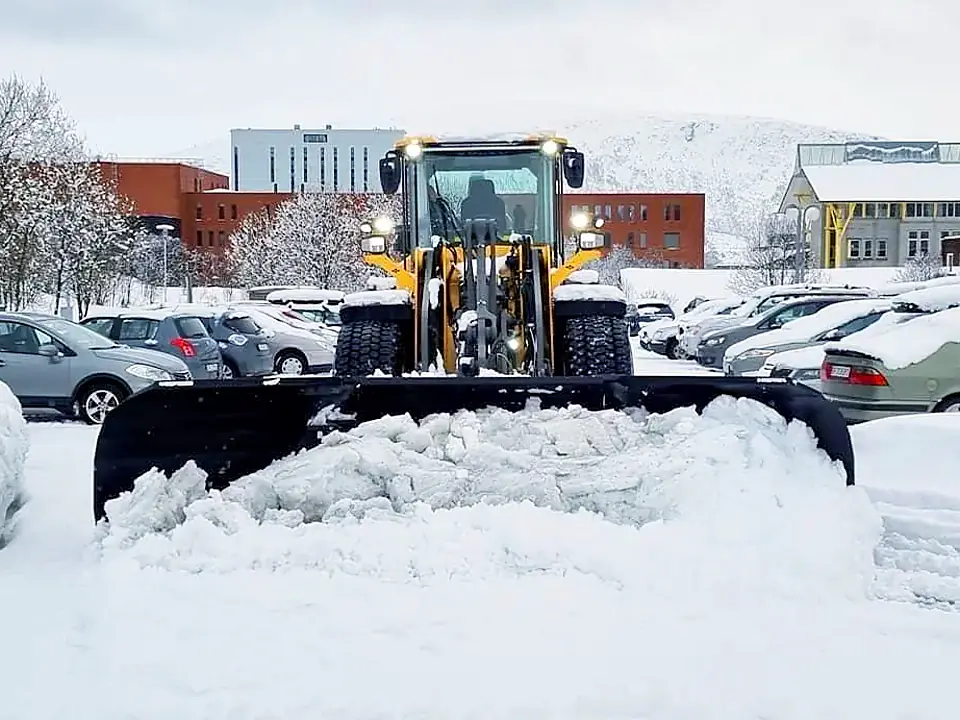

ReferanserReferences
Kunder som blir.Customers who stay.
Mange av kundene våre har vært med oss i tiår.Many of our customers have stayed with us for decades.
Aktive kontrakterActive contracts
Flere flotte bedrifter under aktive kontrakter.Several fine companies under active contracts.
Vi brøyter i dag for bedrifter, borettslag, sameier og offentlige bygg i Tromsø. Noen av avtalene har vart siden 1990-tallet. Referanser fra dem gir vi gjerne på forespørsel.Today we clear snow for businesses, housing co-ops, owner associations and public buildings in Tromsø. Some agreements date back to the 1990s. References from them are available on request.
Be om referanserAsk for references- NæringCommercialButikker, lager og næringsbyggShops, warehouses and commercial buildings
- Borettslag og sameierHousing co-opsGårdsrom, veier og parkeringCourtyards, roads and parking
- Offentlige byggPublic buildingsTrygg adkomst hele vinterenSafe access all winter
Tidligere oppdragPast work
Kunder vi har brøytet forCustomers we have cleared for
Full kontaktinfo til referansene oppgis på forespørsel.Full reference contact details on request.
KontaktContact
Klar for vinteren?Ready for winter?
Fortell oss hva du trenger, så avtaler vi en befaring.Tell us what you need and we will arrange a site visit.